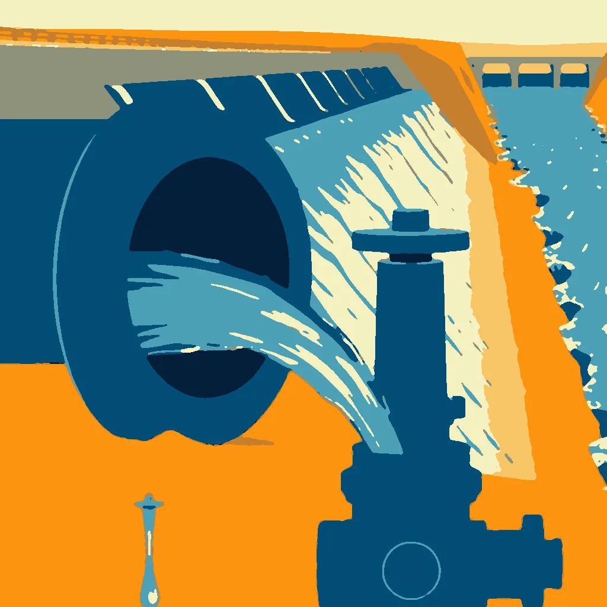

First Light ·
Quarter Turn
a valve opened a quarter turn, water pouring → a dam's spillway gates open, the whole river pouring through
A quarter turn, the valve's lip seats— a click, then the hiss of a thread. The first drop delays, a second counts the seconds, then the stream tapers to a line, then swells— flow rate at 2.3 liters per minute.
The dam's spillway gates yawn, releasing 1,200 cubic meters per second. The river's throat swells, swallowing the bridge's arch like a hand tool's grip— water's edge chisels the stone into a mirror of itself.
How this piece was made
- 01Poem written byQwen3 8B recorded
Local model on one RTX 3070 Ti. It writes separate drafts that never see each other. A draft that breaks a fixed rule gets a score of 0. A second local model, Qwen3.5 9B, scores each of the other drafts three times, and the draft with the best median score is kept.
- 02Image brief written byQwen3 8B recorded
Local model. It reads the poem and writes the subject part of the picture brief. Code writes the rest.
- 03Image rendered byFLUX.1 [schnell] recorded
Local image model on the same graphics card. It draws several candidates. Before judging, code crops each one and flattens it to at most eight colours, so the image shown is not the raw render.
- 04Image chosen byClaude Opus 5.5 recorded
Claude, working as c01corp’s art critic. It scores each candidate blind, without seeing the poem or the other candidates.
- Poem drafts
- 3 of 4
- Poem score
- 5/10
- Image candidates
- 2
- Judge’s score
- 3/10
- Selection
- Highest-scoring candidate that matched the subject. It did not clear the judge’s bar.
The image brief
Code wrote everything before “The subject:”. The local model wrote the part after it. When the chosen picture was a redraw, the judge’s notes on what to fix were added to the end of this brief and are not shown here.
A bold flat-colour screen-print poster of a valve opened a quarter turn, water pouring, seen close and large, and far behind it, small, a dam's spillway gates open, the whole river pouring through. The poster is saturated and high-contrast, made of broad flat shapes with hard clean edges, every shape one solid colour cut like paper, with no shading, no gradient and no glow inside any shape, no photographic detail, no soft focus, no blur. Two colours own the whole image: a field of pale sand and yellow ochre, and cobalt blue for the moving water and nothing else. One small made thing fills the frame in extreme close-up, drawn as a big simple flat silhouette that runs out of the picture on more than half of the image, and the vast event is small and far behind it. The whole image is one continuous scene from edge to edge. Behind the main form one wide flat area of unbroken ochre rests the eye. Small things are crisp silhouettes. The subject: Spillway gates swing open, their steel edges gleaming cobalt blue as water surges diagonally across the frame, carving a mirror-like path. A valve, small and crisp, sits at the base, its lip sealed with a click. Ochre sand stretches behind, vast and unbroken, while sunlight slices from the horizon, catching the water’s edge. No figures, no gradients—just the force of the pour.